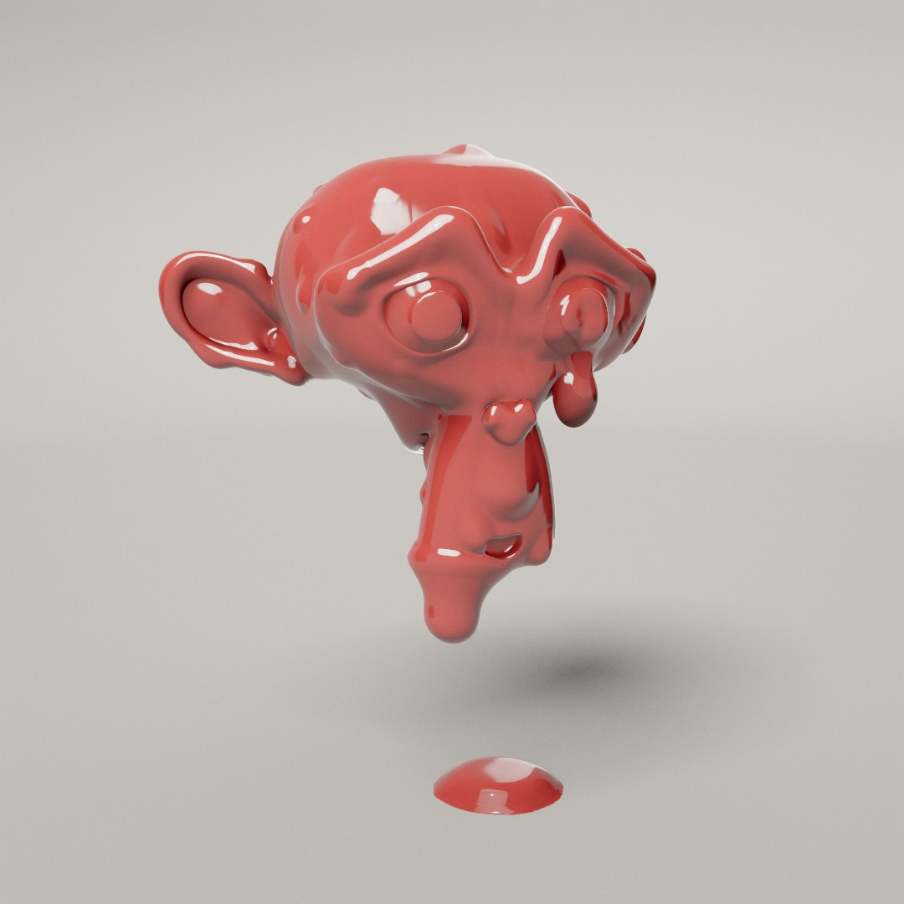

How Melt drips
A floating object melts under a coat of liquid. Blobs seep out, run downhill and merge, hang from the underside, pinch off and fall into a puddle. None of it is a fluid simulation. Here is how each part is faked.

A coat of liquid that drips
Day 3's prompt was Melt. A floating object melts under a coat of glossy liquid: blobs seep out of its skin, sag and run downhill, merge and leave wet trails. On the underside the liquid gathers into pools that swell into teardrops, stretch on a thinning thread and drop into a puddle on the floor.
There are nine solids, Suzanne among them, and five finishes. Hold on the object to grow a blob, or drag it to turn it: the liquid always runs toward the real down as the object rocks, tumbles or flips.
The liquid isn't a fluid simulation. It is a field of soft bumps on the body's surface, displaced in the vertex shader and refined per pixel, so it stays smooth up close. Blobs walk the mesh under gravity, the displaced surface is computed once a frame and read by every pass, and the hanging pools are real pendant-drop profiles grafted onto the skin. The shared pipeline adds the shadows, AO and motion blur.
A shape is a distance field, meshed once
Each shape (Heart, Knot, Icosahedron, Star…) starts as a signed distance function: negative inside, positive outside, zero on the surface. An offline script samples it on a grid and builds a mesh with surface nets: every grid cell the surface passes through gets one vertex, placed at the average of where the surface crosses the cell's edges, then snapped onto the surface.
The bake centres each shape, scales it to radius 1 and picks a grid of 72 to 128 cells per side so the mesh lands near 19,000 vertices, then repeats at 48 to 88 cells for an 8,000-vertex phone mesh. Each vertex takes Newton steps onto the surface, three rounds of tangential smoothing even out the triangles, and normals come from the field's gradient. Ambient occlusion samples the field five times along the normal, at 0.06, 0.15, 0.3, 0.5 and 0.8 units. Positions are stored as 16-bit integers, normals as octahedral pairs and AO as bytes.
The bake also keeps a 48³ grid of exact distances to the baked mesh, signed by the analytic field and stored as half floats. The page uses it to pick the object under your pointer, to check that a drop would not fall through the body, to size the kernel grid, and to measure how thick the object is for the Wax finish. At load the page also finds each vertex's neighbours and three values: rim marks open edges, fade eases bumps out near them, and clearance limits bump height in creases. Suzanne is the exception: Blender's monkey head, Loop-subdivided when the page loads.
Surface nets in 2D
The liquid is a field of soft bumps
There is no liquid mesh. Each blob is a small analytic kernel sitting on the surface: a stretched bump with a centre, a size, and a direction it is running in. Every frame, each vertex adds up the kernels near it and is pushed out by that height. The object keeps its size, and the melt bulges out of it. Each kernel is gated by how well the surface faces it, smoothstep(0, 0.45, n·m), so a blob never reaches through to the far side of a thin part.
How the bumps combine decides whether they look like liquid. Adding them makes two blobs side by side stack into a lump. Taking the larger of the two leaves a crease where they meet. Melt uses a p-norm, (h₁ᵖ + h₂ᵖ)^(1/p) with p = 2.5, which sits between the two. Neighbours fuse into one rounded bulge, and a blob that runs into another simply grows.
Two blobs meeting
Each kernel is k · (1 − s²)², where s is the distance from its centre in units of its radius. It has a smooth top and a smooth edge, and reaches exactly zero at its radius. At p = 1 the p-norm is the sum. As p grows it approaches the max.
Each bump is pushed out along n + 0.3·g_t, where g_t is gravity's component along the surface, so bumps lean downhill and the coat looks heavy. The normal comes from the displaced tangents, using the field's analytic gradient.
In concave creases neighbouring normals converge, and a tall bump would fold the surface through itself. So each vertex stores a clearance: the smallest concave radius along its edges, spread over two rings and averaged. The height is soft-limited to h' = c·(1 − e^(−h/c)) with c = 0.5 × clearance. Small bumps pass through unchanged and big ones level off before they fold. Near open edges a second weight fades bumps out over 0.06 units of surface.
The crease limit
For a crease with clearance 0.1, so c = 0.05. The dashed line is the raw height.
Rocking, tumbling, turning
The object's orientation is an automatic motion times a user rotation. Rock spins it about the vertical axis and tilts it by 0.55·sin(2πt / 22) radians, about a tilt axis that precesses once every 37 s, so the low point traces a rosette over the underside and drips form in new places. Tumble adds a steady roll of 0.09 rad/s about a horizontal axis. Still stops the automatic motion, and switching modes keeps the current pose.
A drag is a rolling ball: one projected radius of drag turns the object one radian, about the camera axis perpendicular to the drag. Letting go throws it, with the spin decaying as e−2t and capped at 10 rad/s. The automatic motion fades out while you drag and blends back over 1.5 s once the throw slows below 0.5 rad/s. Flip turns the object 180° about the camera's horizontal axis over 2.5 s. The pose half a shutter ago is rebuilt from the same phases and spin, so the body gets exact motion blur.
Where "down" wanders over the underside
World down in the object's own frame over 200 s, seen from below; the dot is where it ends. Drips form where this path lingers. Spin turns the object about the vertical axis, outside the tilt, so it never moves down in the object's frame: only the tilt and its precession do, and Tumble's roll.
Blobs walk the mesh toward the real “down”
On the CPU, each blob is a point that walks across the surface mesh from triangle to triangle. Every step, gravity is turned into the object's own frame and projected onto the surface, so a blob slides downhill however the object is rocking, tumbling or flipped. Steep faces speed it up, flat ones stall it, and Viscosity scales it all.
A running blob stretches along its path and tapers at the tail. Behind it, it leaves a trail: a short polyline of thin film that thins out and heals over time. Trails join the same p-norm field, so a trail flows into the blob that left it without a seam. Blobs that touch merge into a bigger, faster blob.
Where blobs seep
Every step the page finds world down, the camera and the key light in the object's frame. A new blob picks a face at random, weighted by area, and keeps it with probability (0.5 + 0.5·up) · runnable · (0.3 + 0.7·toEye) · (0.6 + 0.4·toKey), each a clamped dot product with the face normal, where runnable = 0.2 + 0.8·smoothstep(0.25, 0.7, sin θ) favours slopes a blob can run down. Faces turned more than 60° downward are skipped, and so are faces near Suzanne's open eye rims. So blobs seep on top, facing you and the light, where they read best. On phones the eye and key floors drop to 0.15 and 0.3. Radii follow a log-normal set by Size, and one blob in five is boosted 1.6× so a few dominate.
Seeping weight around the object
A cross-section with the key light at the upper left. Thicker, darker outline means more blobs, relative to the most likely spot.
One blob's run, side view
A blob's life
Up to 96 blobs at once on desktop and 48 on phones. New ones arrive at random, at twice the shortfall per second, until the Amount slider's target is met. Blobs gathering on the underside count half, so the visible side stays covered.
Walking the mesh
A blob's position is a triangle and barycentric coordinates in it, plus the interpolated normal and the nearest corner. To move, the blob adds its step in 3D and snaps the result back onto the mesh. Starting from its last corner, it walks greedily to whichever neighbouring vertex is closer to the target, tests the triangles around that vertex and its one-ring, and keeps the closest point. Long moves are split into sub-steps shorter than half an edge, so a blob can never skip across a thin part or a crease.
One move, snapped back onto the surface
The dashed line is the raw 3D move. Each sub-step is projected to the closest point on the nearby faces, so the blob follows the curve instead of cutting the corner.
What moves a blob
Each step, gravity is turned into the object's own frame and split into the part along the normal and the part along the surface. The along-surface part is the downhill direction, and its length is the slope. Weight grows with the blob's area, so big blobs win against grip and small beads stall.
v = 1.2·e−3·viscosity · max(0, (a / 0.085)² · slope − grip)
// grip: noisy over the surface, fades 60 % the longer the blob sits still
grip = 0.12 · pin · (0.4 + 1.2·noise(p)) · (1 − 0.6·smoothstep(0.5, 3, stillTime))
// tail stretch, eased over 0.2 s, capped at 3
tail = 1 + 2v / (v + 0.12)
Trails are chains of thin film
A running blob drops a point behind its tail end: a position on the surface and a film thickness proportional to the blob's height. A new point starts every 0.9 blob radii, or sooner when the path turns more than 12°. The film's volume is taken out of the blob, so a long run uses it up.
A trail is a polyline of up to 8 points (6 on phones). When it fills up, it carries on in a new slot linked to the old one, so thick old points are never dropped and a linked chain reads as one stream. Every point thins exponentially, with a time constant of 1.5 + 3·viscosity seconds. Points that fall below a minimum drop off the old end, so trails shorten from the tail as they heal. Short loose bits heal three times faster so they never linger as specks.
Cross-sections: a blob and its trail
The film is th · (1 − r⁴/w⁴)² with half-width w = 0.8·√th: low and flat-topped, unlike the blob's rounded (1 − s²)². Within a chain, segments meet with a smooth max that rounds more at bends. Separate chains combine with a softer p-norm (p = 1.6), so side-by-side trails fill in to a sheet. Free ends taper over 0.3 units. The shader evaluates the same functions as the CPU, which is how runners can feel old channels.
Compute the surface once, read it everywhere
The shared pipeline draws the object in several passes: the shadow map, a depth-and-velocity prepass, a second prepass at the motion-blur shutter's pose, and the lit main pass. Each pass used to evaluate the whole melt field again for every vertex, and the velocity passes did it twice, for this frame's pose and the previous one.
Now a small pass draws the body's vertices as points into float textures: this frame's offset and normal, last frame's offset, and (with motion blur) the shutter pose's offset, so 3 evaluations with motion blur and 2 without. Every other pass just reads its vertex's texel. The per-pixel normal in the main pass still evaluates the field, pools included, so highlights stay smooth however coarse the mesh is; the low tier skips it and uses the baked normal.
Testing every kernel at every vertex would mean 96 blobs and 160 trails each. Instead the CPU builds an 8³ grid over the shape's box each frame, and each cell lists up to 47 kernels whose bounding sphere touches it. A blob's sphere is grown by how far it moved between the three poses, so one list serves all of them. The shader reads its cell's list from a texture, and a cell that overflows falls back to looping over every kernel.
Before: the field in every pass
6 field evaluations per vertex per frame with motion blur.
After: baked once, then read
now · previous · shutter = 3 evaluations
| GPU per frame, fastest 10 % | Before | After |
|---|---|---|
| Torus, Lacquer, desktop | 5.30 ms | 3.94 ms |
| Suzanne, Lacquer, desktop | 7.04 ms | 3.56 ms |
| Suzanne, Wax, desktop | 7.47 ms | 4.60 ms |
| Torus, phone tier | 5.73 ms | 4.62 ms |
Measured on an RTX 4060 laptop through ANGLE D3D11 with a fixed seed and clock. Reference frames before and after match within 1/255.
A hanging pool is a real pendant drop
Liquid that reaches a low point on the underside collects into a pool. There the displaced surface is remapped onto a lathe, a profile spun around the down axis. The pool grows out of the skin with no seam, because it is the skin.
The bulb's profile comes from physics, solved once at load. Surface tension pulls a hanging drop round, and gravity drags it down. The balance is the Young–Laplace equation: along the profile, the curvature has to grow with depth by exactly the hydrostatic pressure. Integrating it from the drop's tip gives the shapes below, tabulated for several root widths. A small pool is a shallow lens on a wide root. As it fills, the root narrows and the drop becomes a pear, widest near its round bottom. Three parts are added by hand: a viscous stretch above the equator, the neck, and the fillet into the skin. Each pool sets its own capillary length in object units so its released drop has the radius it chose.
A neck forms only in the last fraction of a second. It thins to a thread and snaps. The falling drop takes exactly the volume below the neck, so nothing pops, and a small nub recoils into the skin. Each pool fills and lets go on its own timing and size, so they never drip in step.
One pool's life
Lengths are in capillary lengths ℓc = √(γ / ρg), the scale where surface tension and gravity balance. The profile is integrated with dφ/ds = 2/b − z − sin φ / x from the tip, where b is the tip's radius of curvature and z the height above the tip. The faint curves show the same equation past where the drop attaches.
No new vertices
The hanging drop is drawn entirely with the body's existing vertices. Every vertex inside a disc of skin around the low point is moved onto the drop's profile. Skin near the centre goes to the tip and skin near the edge to the root, spread in proportion to the drop's surface area plus extra weight at the tip, bends and neck, so thin parts keep a few rings of vertices instead of tearing. The drop's surface is 1.5 to 3.5 times the skin disc it comes from (1 to 1.8 on phones), so the skin stretches. The skin around the pool gets slightly sparser to supply it.
That is why each shape is split once into four triangles per triangle when it loads. The split uses PN-triangle midpoints: each new edge vertex sits on a cubic curve through its corners' normals, so the silhouette gets rounder, not just denser. The blobs keep walking the original mesh; only the drawn mesh is split, and the low tier skips it. A pool can only be as smooth as the number of vertices under it, which is also why drop outlines look a little faceted on the phone tier.
Skin vertices moved onto the profile
A falling drop wobbles into shape
At the snap, an instanced sphere takes over. It is two half-ellipsoids around a shared equator: one reaching ahead along the velocity and one trailing behind. It leaves with the bulb's own proportions, then each half-height rings down on an underdamped spring to a round front and a speed-stretched back (at most 1.6× the radius), keeping its volume. A drop leaves with the bulb's own velocity, so a swinging object flings its drops, then falls under a gravity of 40 units/s² with a drag of 0.4 per second. One snap in three also sheds a small bead from the thread, 0.10 to 0.16 of the bulb's radius, at 0.6 of its speed. When its centre reaches the floor it splats into the puddle and sinks out of sight before its slot is freed.
Shape after release
An example: the front half-height over radius, starting from a pear-like 1.5 (each drop starts from its own bulb's proportions) and settling to round, with ω = 38 rad/s and ζ = 0.22 as in the code. The back settles to min(1 + 0.03·|v|, 1.6). The drawings above the curve show the drop at a few moments.
The puddle is a thin film on a grid
The floor puddle is a height field: liquid depth on a 144 × 144 grid (112 × 112 on phones) under the object. Each landing drop adds a Gaussian splat of its exact volume, plus a splash ring that runs across the surface. Liquid then flows from deep cells to shallow neighbours, but only where the deeper side is above a pinning depth of 0.028, ramping to full flow at 0.05. Below that the film is pinned, so a pool spreads into a pancake about 0.028 deep and its edge stays put instead of smearing out. All film beyond 0.3 equivalent pool radii from the pool's volume-weighted centre moves inward at up to 0.5 units/s, so stray splats join one puddle. Diagonal neighbours exchange at half weight, so pools spread round.
The floor's steady soak starts only once drops stop landing: 8 seconds after the last one, easing in over 6 more. Past a set volume it soaks faster at any time, so the puddle stays under the object, and film thinner than a quarter of the pinning depth dries within half a second, so splat tails leave no halo.
The drawn surface is not the raw depth. A shown height turns it into a plateau 0.07 high with a rounded rim, domed by up to 0.04 where a drop just landed, with dry cells just below the floor. It is blurred into a texture and read with a cubic B-spline, so the outline follows a smooth curve, and lifted at the toe so the wall meets the floor steeply. The mesh is a separate 256² grid (192² on phones), denser near the centre and drawn only out to the wet area. Splash rings are drawn, not simulated: the last 8 landings each send a raised ring 0.035 wide outward at 0.4 units/s, fading within a second, a quarter of the drop's radius high, and only once it has left the landing's dome so it never reads as a crater.
A 1D slice of the puddle
Height is exaggerated. The dotted line is the pinning depth: film above it flows, film below it stays. The same rules run in the page in 2D, at 60 steps a second, with 4 relaxation passes each.
Fixed steps, smooth frames
The simulation runs at a fixed 60 steps a second whatever the display rate, and each frame draws the state blended between the last two steps, so motion stays smooth on 120 Hz screens. A new shape is warmed up for 6 simulated seconds before its first frame, so it opens already dripping. The warm-up uses a fixed upright gravity, key and eye, so a seeded link opens the same way at any window size. After that the live camera steers where blobs seep, so the melt diverges as you move. Pointer blobs and pools use their own random source so they never shift the seeded streams. A frame runs at most three steps (two on phones); time beyond that is dropped, so a slow frame slows the melt instead of skipping it.
Motion blur needs each surface at three moments: now, last frame, and the start of the shutter. Blobs keep last frame's pose and extrapolate the shutter pose along their run; drops use their velocity, capped at one radius; the bake writes the body's three offset textures. Pools keep one pose and the puddle two, since they move slowly.
The url keeps the seed plus every control that differs from what that seed gives, and it is read before the first shape is built. R picks a new seed: with the same shape the melt is rebuilt at once; with a new shape, the finish, set and framing wait until it has loaded and change on the same frame.
| Budget | Desktop | Phone |
|---|---|---|
| Blobs | 96 | 48 |
| Trails | 160 of 8 points | 80 of 6 points |
| Pool slots / seeded at once | 16 / 4 | 8 / 3 |
| Falling drops | 64 | 24, 15 % smaller |
| Pool profile rings | 64 | 40 |
| Puddle grid | 144² | 112² |
| Body vertices (SDF shapes) | ~19k, split 1:4 | ~8k, split 1:4 |
| Suzanne | Loop level 3 | Loop level 2 |
| Motion blur | 32 samples | off |
Five finishes, one material
The body, the drops and the puddle are three materials that share the same look uniforms and shading code. A finish sets colour, roughness dry and wet, metalness and specular strength; Wax also adds a bump, sheen and scattering. Wet areas, where fresh melt runs, are glossier than dry ones.
Diffuse light, the key and the shadows come from one lit studio, with the key at the upper left at intensity 20. Reflections use a separate analytic softbox studio baked to a cube map per Set: a floor graded into a wall, a key softbox, a rim strip behind and dark flags at the sides that give metal its edges; the Dark set adds tall strip lights that draw an edge down every run. Black lacquer gets its own variant with a darker surround and three small reflection cards, so every bump catches a highlight while flat faces stay black. The Reflections menu can swap in an HDR (rotated so its brightest light sits at the key and scaled to match) or the lit studio itself.
The backdrop is Day 1's seamless cyc, and the camera is kept inside it. The shadow camera is fitted to a sphere covering the object, its drips and its shadow, refitted when Height or Shape changes. The pipeline's sphere occluders darken what is under the liquid: one on the body and up to eight on the largest hanging bulbs and falling drops, for contact darkening on the floor and the puddle.
Wax needs light to get inside
Plain diffuse shading made wax look like plaster. Real wax scatters light under its surface, which shows in three ways, and the Wax finish fakes each one.
Light wraps past the shadow line. A share of the diffuse light uses a wrapped falloff, (n·l + w) / (1 + w)², so it keeps going past where the surface turns away. Red travels furthest through wax and blue least, so w is widest for red, and the shadow side turns warm instead of grey.
Thin parts glow. Wherever the surface turns away from the light (n·l below 0.6), the shader sphere-traces the object's distance field toward the light to find how much wax the light crossed. Each step moves by the distance to the surface, so it takes only a few steps. The light that gets through falls off as e^(−t/ℓ), with a longer ℓ for red. Ears, rims and hanging drops light up from behind.
Fine bumps blur. The dimpled dry surface shows only in the highlights. The scattering share, 75 % of the diffuse light, uses the smooth normal, the way scattering softens small detail; the other 25 % is ordinary diffuse on the bumped normal.
Diffuse vs. scattering
Measuring thickness
Each circle is as large as the distance to the nearest surface, so the trace can never step outside. Its length t through the wax sets how much of the key light comes through.
Controls
- Hold on the object to grow a blob; a press shorter than 0.25 s drops a medium one, and pressing a blob feeds it. A hold on the underside grows a pool after 0.3 s and keeps it dripping like a tap.
- Drag the object to turn it: a press that moves more than 5 pixels (10 on touch) becomes a drag, and its blob sinks back in. Drag off the object to orbit; scroll or pinch to zoom.
- Shape: one of nine solids. Finish: one of five materials.
- Amount: 10 to 60 blobs (8 to 36 on phones), and how fast pools are fed.
- Viscosity slows everything: blob speed falls as e−3·viscosity, seeping takes 1.2 to 2.5 s, trails last longer, and drops pinch more slowly and hang longer.
- Size scales blob radii and drop size; Drip length stretches the hanging drops.
- Motion: Rock, Tumble or Still, with Spin in radians per second. Height raises it above the floor and refits the camera and shadow.
- Set: a light or dark studio. Reflections: the environment the surface reflects.
- M resets the melt, F flips the object, W toggles wireframe (in the Rendering section).
- R randomises, Space pauses, Tab hides the panel, P saves a screenshot.